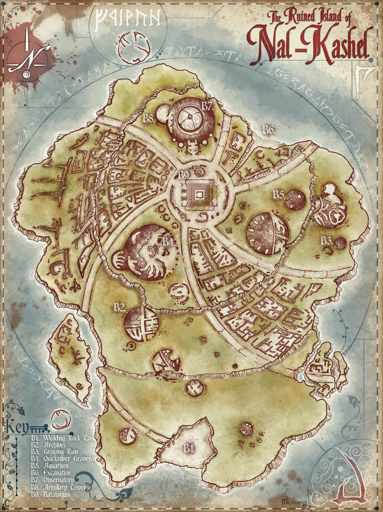
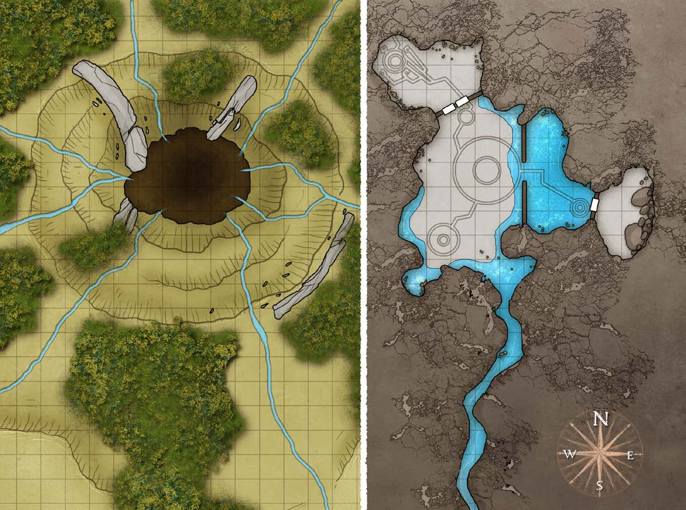
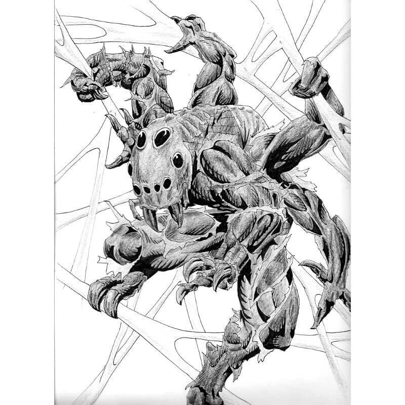
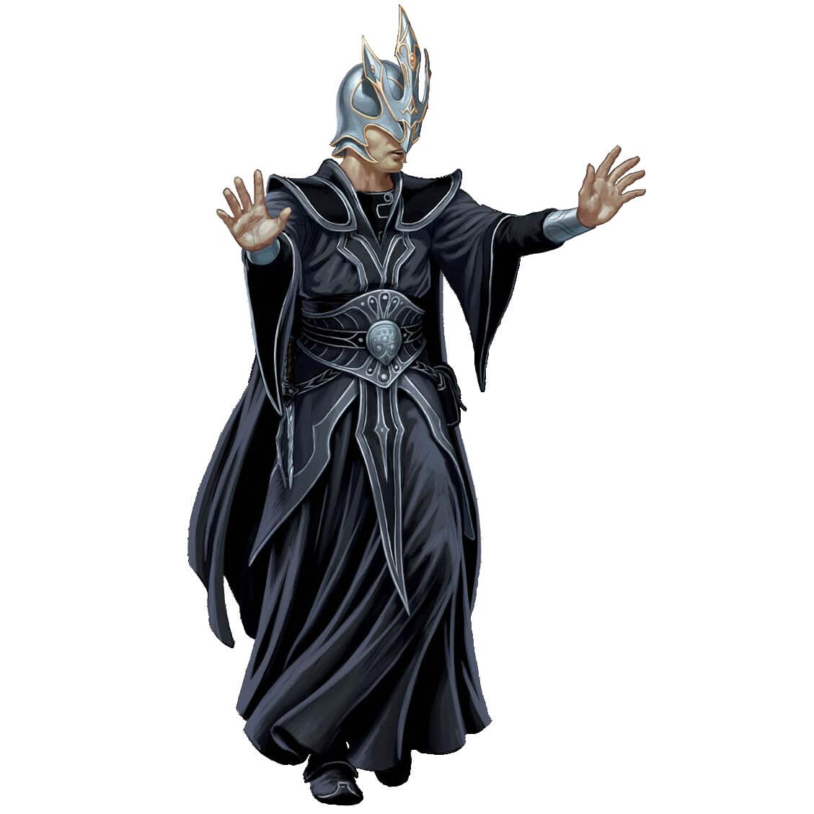
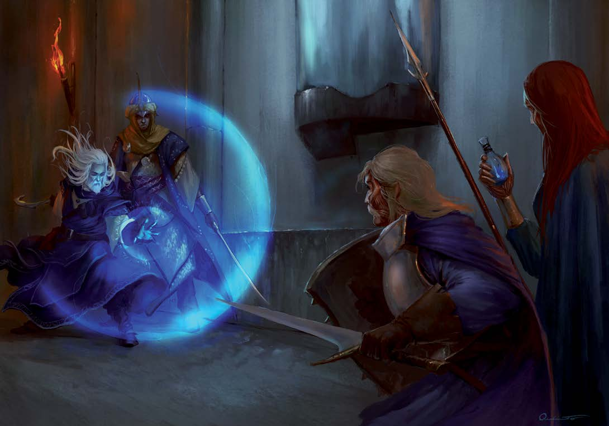

"On our fourth day out of Magnimar, we heard ’em singing. I never heard anything to match it, nor likely will again. Their voices were so high an’ sweet, like songbirds given lyrics. Everyone on deck heard ’em, and we all rushed to the gunnel to peer into the fog. The mists parted, and there they were, as beautiful as they sounded. Hair like silk, eyes like gems, prettier than any maidens with feet I’d ever seen.
"They stopped singing straightaway and were under the water and gone with a flash of their tails. I almost asked the captain to wait, to give us a minute to lure them back out, but then one of them looked back at me before slipping ’neath the waves, and her eyes didn’t look like sapphires no more. They were daggers of ice, set to skewer me clean through. We turned and hauled away as fast as fast, and I’ll be glad if I never see them waters again."
— From the log of Cheriss Tar, swab on the Westerly Swell
Archives and Files
Written information and intelligence collected. This intel can provide insight into motivations, fill in background events, and provide instruction or tips to playing the campaign.
Threadfin District: This district holds most of the common residents in the city, with the few stores found there providing everyday goods and groceries.
A Bit of Everything (Run by: Opuo) - This general store also serves as a pawnshop.
Five Fins (Run by: Kelia) - Five Fins is the most popular tavern in the Threadfin District.
Margela's Brews (Run by: Margela Duskcurrent) - Locals know this unmarked shop is the home of an elderly aquatic elf who makes a living serving specialty kelp brews in her parlor.
Restful Shore (Run by: Minastalla) - The only inn in the city the city equipped to provide comforable accommodations to surfacers.
Seahorse Stage (Run by: Quelyon) - This small theater provides a place for Threadfin REsidents to enjoy plays and concerts.
Seamount District: The wealthy and aristocratic citizens of Talasantri make their homes here, where houses are much larger and have a more planned architectural style.
Cerulean Cove (Run by: Cerulean) - Only members, or those vouched for by members, are allowed into this luxurious drinking hall.
City Hall (Run by: Rillkimatai) - In the center of Talasantri stands the city hall, a long rectagular building fronted by a large plaza.
House of Crystal Waters (Run by: Seraban) - Hundreds of sparkling crystals embed the walls of this temple to Gozreh's female form.
Stargrass Hall (Run by: Vatoya) - The pillars that flank this enormous theater are completely covered in twining stargrass, delicate star-shaped yellow flowers sprouting from deep-green vines.
Treasures of the Sea (Run by: Derrona) - While most merchants have their shops in the Whalefall District, Derrona opened her magical jewelry shop in Seamount.
Whalefall District: Whalefall is the smalles of Talasantri's districts, but it is densely packed with stores, workshops, and artist's galleries, with several taking advantage of the district's limited reliable high-temperature heat sources.
Arcanical Tower (Run by: Vhenarryn) - The tower is the home and laboratory of Vhennaryn, a talented wizard who has assigned herself the title of Arcanic Researcher.
Boneworks (Run by: Vesshyo) - The owner of this workshop and gallery works exclusively in bone.
Loryl's Barter (Run by: Loryl) - This shop is a mishmash of general survival gear, minor magic items, potions, and weapons, with regular surface trade supplying alcohol and metal weaponry.) -
Many to One (Run by: Urmygh) - This gallery displays the work of a popular artist, whose other works also hand in both City Hall and Cerulean Cove.
Shell & Stylus (Run by: Echono) - This shop provides an alternative to standard and unwieldy techniques of writting via engraving on stone tablets, this shop sells underwater paper, bioluminescent ink, and a unique alchemically treated stylus.
The Undertow: The natural caverns beneath Talasantri were long ago decreed too unstable to build within, and the entrances were sealed. IT is an open secret, however, that criminal organizations now inhabit these caverns, beyond the reach of the city guard.
Blue-Ringed Tavern (Run by: Cenath) - Named for the deadly octopus, this tavern is set in one of the smaller cavern's off the Fathom Bazaar.
Bodd's Oddds (Run by: Bodderoh) - This tiny pawnshop caters to the poorest of Talasantri, ans its wares are little more than junk.
Fathom Bazar (Run by: Jurix) - Most of the Undertow is a large bazaar in a central cavern. Illegal goods (including drugs, poisons, stolen items, and cursed or vile magic items) are available to buy and sell alongside ordinary goods, sold by merchants who wish to avoid Talasantri's taxes and the cost of maintaining a storefront.
Queen's Palace (Run by: Jurix) - Black coral, broken marble statues, pillars from ancient ruins, and timber from shipwrecks form the walls of this imperious structure.
Shadow's Den (Run by: Tirak & Ixena) - When denizens of the Undertow need the services of a cleric but don't want to draw attention to themselves, they visit the Shadow's Den.
Maps of Arcadia, Ancorato, and Surrounding Islands and Settlements
Click on a Map for Fullscreen
Map of Ancorato AreaMap of World OceansMap of Talmandor's BountyMap of Bonetown at the Black Cove

Map of Nal-Kashel Campus
Maps of Claimed/Cleared Structures and Points of Interest.
Click on a Map for Fullscreen
Map of Spindlelock SolutionsMap of the Ruins of 'Joskadlr' (The Black Rock)

Map of Ankyhathyra Underground FacilityMap of Nal-Kashel Observatory and Orrery
Recovered Journals and Documents
Notable excerpts from journals, letters, documents, and magical intel recovered from expeditions.
Insert Handout p.21
The Green Book
Talmandor's Bounty Chronicle and Weekly Gazette
Session 01-02:Wealday, 3 Abadius, 4718 AR
After a long voyage, the Peregrine arrived at the island Ancorato today, but the colony appeared empty. Lt. Governor Ramona Avandth directed me, Perrell Beys and Chronicler, to begin chronicling a journal of daily events, in the event the colonists are gone, and then she sent the expedition crew ashore while the ship heads up to secondary landing in search of survivors. Many aboard suspect something is amiss, and I myself, at least, have a slow fear gnawing away at me. Maybe we shouldn’t have come? We’re sailing around the isle now, and some are talking about turning back.
P.S. When we later rendezvoused with the expedition team, they explained what happened to them. After valiantly fighting off a pack of grindillows in the bay, the expedition team arrived on shore to a quiet, half-finished town, with not a person in sight. They headed directly to the chapel, hoping to find anyone along the way, but instead were greeted by a phantom that frightened half of them all the way back to shore. Regrouping, they discovered a tiny fae “crab monster” sabotaging their rowboat and a sunken canoe that had been sabotaged. Returning to the chapel, the brave bard, Lucca, was able to translate a series of knocking into the words “Why, Rayland, why, my friend, why betray me, why are we dead?” Thoroughly shaken, the team headed for the town hall, finding journals and records of the island that ended around a month prior with several pages carefully removed. Within the house, the clockworker, Karn, captured a clockwork spy and the party is very keen on finding out who sent it and if it has any connection to the missing settlers.
The expedition team continued to carefully to clear out the remaining buildings in the palisade, and after waterlogging a great deal of necessary food supplies and capturing a goblin, they ended with Governor Arkly’s very own house. Inside, they found the colony charter with many colonist’s names checked off, and an ancient Azlanti timepiece. Unsure of what the check marks could mean, the team resupplied at the pavilion tents, and turned southwards towards the farms. On the way, beneath the only plum tree in the area, the team discovered a small pouch with a letter inside writing about some sort of schism in the group between Una and Rayland. The expedition team suspects some colonists tried to escape, but after finding the sabotaged canoe, they probably did not succeed. Reaching Levin Farm, the expedition team defeated a drunk choker and found a hidden Azlanti Longsword before settling in for a restless night, hoping to find answers in the morning.
Session 03:Oathsday, 4 Abadius, 4718 AR
The ship became stuck a few miles off-shore, as though we'd run aground, but after several hours searching the hull and divers investigating the waters, the reason for us being stuck here isn't known. Ramona went ashore with the marines to search for the colonists, but with no buildings or signal fires, it seems unlikely anyone is here. We signed up to be part of the second wave of a research and colonization expedition, not to die on a cursed island aboard a ship stuck on phantom rocks. A few people have been talking about mutiny, and I'm scared.
Pearl was spooked by a nightmare where she was woken by her mother telling her to run. They ran from the bedroom door down to the water and she dove in after her mother. A great storm tossed the waves as they swam to an island orbited by a floating tower. The broken tower came crashing into the island and Pearl’s mother’s throat bulged out like a frog. She croaked out the word “run” as the dream ended.
P.S. After a surprisingly uneventful night’s rest at the governor’s house, the expedition team searched the rest of the settlement, finding a Blood Maize lying in wait in a field and an Ankeg Mother in a burrow, which the druid, Scekros, set ablaze. They also found the emaciated skeleton of Edwin Fox from the first wave of settlers, but little else. Every signal pointed that the settlers had left very suddenly. When the ship did not return for them at the designated time, the expedition team traveled North-Northwest along the coastline to the rendezvous at Site B. As they traveled along, the group came across a herd of boar that gored both the barbarian and the druid, but brave Pearl and Lucca were able to slay the beasts and heal their team. When they crossed the river in their path, an abberation known as an Incutulus attacked them, wielding the body of Raila Lionheart, another first-wave colonist. Once defeated, the rest of the hike up the coast line was relatively uneventful, with sightings of some indigenous lifeforms such as Sea Lions, Gliding Turtles, and Sahuagin, and a terrifying close encounter with a Smoke Sentinel punctuating landscape. When they finally arrived at Site B, they were able to recount their findings to Ramona, who relayed to them that the ship was unable to move from its current place, even with all of the sails filled with wind. The expedition team declared they would find the source of the problem once they were out at the ship, and settled in to camp with the marines for the night.
Session 04:Fireday, 5 Abadius - Starday, 6 Abadius, 4718 AR
The expedition team returned with Ramona after rowing in late on Fireday, but a lack of news was bad news. The following morning, the expedition team dove beneathe the ship and resolved the situation, which was quite a surprise when the ship lurched suddenly forward at over twenty knots, knocking many of us off our feat. The party returned to the ship and convinced several of the mutineers to simmer down, and one of them spent time personally reassuring me. I decided to commit to being as helpful to them as I can, and to record their works in The Green Book, at least within the Post Script. They continued to investigate the area before we sailed back to Talmandor's Bounty to unload the ship and see the colony with our own eyes.
P.S. The party leveled while the marines ferried them back to the ship. The following day, the team dove under the waves to investigate the reason the ship would not move. There was a great commotion as they faught some beasts and the ship lurched to life. Every hand on deck spilled wind from the sheets to half it once again as to not leave behing the team that was still fighting. once they returned to the ship, they recounted a great tale of fighting off three Echenesises, remora-type creatures that eat speed for lunch!
There had been a lot of contention on the ship after the other settlers disappeared. Many people were swayed to stay after talking to the expedition team, but PFC Sedgewuck and Lord Carrolby led a small team of mutineers, which were quickly shut down by the captain and his crew. They'll be staying here with the rest of us. The expedition team further went off to fight some grindillows, but were unable to clear them out. Hopefully they will be able to take care of them before they cause any serious problems to the colony.
Session 05:Sunday, 7 Abadius - Moonday, 8 Abadius, 4718 AR

The ship left this morning. We’re really here now, there’s no turning back. We’re all hopeful and we’ll be taking a few weeks to sort everyone out. The clerics and the expedition team went to investigate the church where they found Silas Weatherby’s body in a box. Poor Pearl couldn’t stomach the situation.
The expedition team went to the grindillow cave today, but after they were gone for a few hours, Scekros came running into town without the rest of the team, shouting about a spider man that had eaten them all? When the others got back to town they were covered in webs, but at least they were alive… Aparently, Luca fooled the monster with a clever illusion, but pearl was so angry at Scekros she bloodied his nose over the matter.
Session 06:Toilday, 9 Abadius - Sunday, 21 Abadius, 4718 AR
The past few weeks have been a whirl of activity as settlers have been assigned to homes, fields have been cleared, cargo has been unloaded, and all the colonists are hard at work setting up Talmandor's bounty. Ramona gave the expedition teama reprieve after all they've already done since we arrived, while I have been busier than when I interned at Bountiful Venture while finishing my college degree. The colony should be back on its feet soon. Bartholomew was also conditionally assigned to the expedition team as a reserve member.
Lucca the bard received a dream. He was brought before a king’s court, in front of a king, queen, priestess, councilor, and bard. They spoke to him, concerning the approaching cataclysm, and asked if his sin magic was up to the task. He protested to them, claiming he had no sin magic, but when he looked down at his hands, he found them imbedded with Ion Stones. We can only pray it wasn’t a dream of the future.
Session 07-08:Moonday, 22 Abadius, 4718 AR
Ramona assigned the expedition team to help with several tasks and strange happenings in and around Talmandor’s Bounty. Lt. Tychar took a statement from Daib this morning about an attacker that broke in during the middle of the night, lucking Geoff was able to hit the creature over the head and scare it off. The expedition team followed tracks leading to the well and climbed down, finding a hole in the wall leading to an underground cavern. The light they cast was unable to penetrate the darkness, and only Morogak and Scekros were able to see the horrifying Dark Mantles that attacked the party. Deeper within the tunnels they found four juvenile chokers and their parents. Pearl killed two of the juveniles and saved Lucca before getting grabbled by a parent hearself, getting rescued by Scekros, who enabled her to kill one more juvenile before she went down. Lucca stood over her body to protect her as he killed the fourth juvenile, and Morogak killed off the parents. As they continued through the tunnels, they found Raylan Arkly’s bag and a cavern full of gems guarded by crystal scorpions, but after Lucca spoke with them, they took up their eggs and peacefully left the cavern. After returning to the surface, Pearl told Tipps about the gem-filled cavern - it will surely be of great worth to the settlement.
The expedition team attempted to help Father Eamon to decide who would get the house he and Father Kurvis were sharing, but after a longwinded argument with Lord Carrolby and Luetin Calewick, he decided Luetin Calewick would get it.
Father Kurvis asked for the expedition team to help him look into a secret message he had discovered while clearing out one of the houses. It seems that the Aspis Consortium may have had a spy in the first wave of settlers. They followed the directions from the secret message and found a strange circular place with columns surrounding it and the phases of the moon on the floor. Two moving statues, called celadons, excitedly spoke to them in Azlanti, wanting to teach them about the Moon Mother, Acavna, as though they were Azlanti children, and Pearl and Lucca listened to them eagerly while Scekros and Morogak refused to speak with them. They were able to speak broken, slow Common as well, which they said Eliza Hanivar taught them. They pointed out a tower in the distance and explained that Eliza had gone there. On their way back, they ran into [REDACTED]. After they told him what they discovered [REDACTED] agreed that Eliza was probably a member of the Aspis Consortium and [REDACTED].
Just before reaturning to the Colony, they ran into Scout Heatherly and she led them to Private Milon Cattenbury, who was trapped in quicksand. Pearl tied a rope around her waist and the party slowly and carefully made their way through the grove of trees. Once they reached the quicksand Milon was trapped in, Pearl leapt into the pit and wrapped the rope around the marine so Morogak could pull him free. After catching their breath following the tense and dangerous situation, Milon, Sighra, and Lyra all expressed their gratitude.
The expedition team’s last task of the day was to gather reagents for Alba Divenvaar which should have been an easy task, but an assassin vine attacked them, nearly killing Bartholomew, who had tagged along with them while Morogak rested.
Session 08-09:Toilday, 23 Abadius - Wheelday, 24 Abadius, 4718 AR
Sandstrider recruited the expedition team to hunt a large boar. They set up traps all morning, but when the boar was herded toward it, it veered around the traps to attack the expedition team. Sandstrider did massive damage to it with her bow, and Pearl was able to finish it off. It will certainly be a delicious meal once it’s finished cooking!
On their way back the expedition team was attacked by some frog-like humanoids. Others were attacking the settlement, but luckily the Marines were able to take care of them. There was a waterproof paper on them that had aboleth writing on it, directing the frog humanoids to take prisoners to the tower. The party will take a day off to recover before investigating further.
Session 10:Oathsday, 25 Abadius, 4718 AR
Before heading to the tower, the expedition team decided to take care of a few lose ends, first heading to the grindillow cove. Within the cove they found a flask labeled with the initials EM before they were attacked by a pair of octopuses and four grindillows. After two fled, the team followed the tunnels around until they found a large cavern with a larger grindillow with a shark-like head using the exposed hand of a submerged statue as a throne, guarded by two more grindillows. They tried to talk to the head grindillow, but after diplomacy failed, they attacked. After a long fight, Pearl, who had been knocked prone, thrust her rapier into the head grindillow’s chest, killing it. From its corpse, they curiously recovered a goblin-made ring, though they did not have the time or means to unearth the statue whose hand was sticking out above the sand. Perhaps they will return one day...
Ver Bedrich, a sea witch and a colonist, has a strangely vivid dream, but has no one to confide in besides Pancake, who is all Ver really needs anyway.
Session 11:Fireday, 26 Abadius, 4718 AR

The expedition team set out early this morning to speak with the Monkey Goblins. Monkey Sticks, who had been spared by them before, was giving little goblins their coming-of-age ceremony with an Azlanti image of a man wearing a mystical mask to conceal his identity and speaking reasuringly. While Lucca expected the image to be an illusion, detect magic revealed it to be, curiously, a transmutation effect. They met with the goblin chief and after he realized they had the goblin-made ring, they were willing to make peace. EM was their old chief who died to the grindilows, killed by a large shark-headed one named Brinetooth.
When the expedition team returned to the colony to check-in, they discovered that the sorcerrer Karn had gone missing, so Ramona Advanth assigned Ver Bedrich, an energetic sea witch, to the expedition team. We hope they can locate Karn and that more do not disappear...
The expedition team went to the Spindlock tower, fighting a strange swarm of ball bearings along their way. The lock on the door had evidently been forced open before, but a touch of Ver’s hand had it swinging open. An image appeared before them, a man in Ancient Azlant garb, the same man that appeared at the goblins coming-of-age ceremony, and relayed messages to them. The first two seemed to be from ten thousand years ago; one, a work announcement, and the second a warning to brace for impact, possibly from Earth Fall. The third announced a facility breach, that the defenses were active and compromised, and a containment breach. The fourth was only from a minute before, saying, “I’ve seen you before, the war was never over.” As they pondered the messages, a fifth message rang out. “They’re watching you. Watch out. We’ll see who wins.” Our expedition team barely had time to draw weapons before secret doors were opened and more frog-men attacked. The team fought through the ground floor, fighting androids, dealing with automatic crossbows, and even more frog-men. Clever Lucca was able to disable the automatic crossbow traps and recalibrate them to attack different targets. After the battle, the team discovered a strange voice message that talked about the coming Earth Fall and a spy that had been discovered. They also found the remains of poor Barnabus Braeton, another first-wave colonist, and two bars of magic soul soap that will cleanse a person of enchantments. Upstairs, they fought the big frog boss and discovered a library with surviving ioun stone technology! There was so much information, lore, and technology! Unfortunately, there were also more nefarious things to be discovered. A giant tank bubbled up to the third floor and as they followed the stairs upward, they found Rayland Arkly, the Colonial Governor sent with the first wave, and Eliza Hanabar. Rayland was quiet while Eliza wailed and cried, begging for rescue, telling of someone that looked like an elf but with purple eyes who had made them go there by reaching into their mind and pulling on them like a puppet with strings. Rayland was obviously suffering from PTSD, but they suspected that both Eliza and Rayland may be under some sort of enchantment, and decided they would need to return later with some backup. When the team told them they’d be back, Eliza shrieked and started casting spells. As the team fled, they watched with horror as Rayland ran Eliza through and threw her body into the tank.
Session 12:Starday, 27 Abadius - Sunday, 10 Pharast, 4718 AR

When the expedition team returned to Spindlelock Solutions, neither Rayland Arkley, nor Eliza Hanivar's body were there.
P.S. The past several weeks have been filled with jubilation as markets have opened and houses are completing construction! The large boar the expedition team and Sandstrider slaughtered was cooking in a pit for over a week and it was absolutely delectable! There have been celebrations and everyone is getting to know each other better. This place is finally starting to feel like a home, and I've even started settling in to a routine.
Session 13:Moonday, 11 Pharast - Toilday, 12 Pharast, 4718 AR
The expedition team received several extensive briefings, and were tasked to do several things, all of which fall under the umbrella of the expedition teams regular mission - Explore, Expand, Exchange, Experience. Given free-range of methods and direction, it was up to them to decide which tasks to takle first.
The expedition team headed out this morning to a mysterious abandoned Ulfan settlement called Joskadalr. It looked to be about 500 years old with only three dilapidated buildings left along with the foot of a long-gone statue. A glyph inside of the cliff-top house appeared to be a variant on a Varisian trail sign and read: “undead in the water, safe shelter NOT HERE” along with a set of coordinates to another location. It is possible that the great Durvin Gest, the famous pathfinder, is the one that left this glyph. If we are correct, we hope we can follow his path. It was discovered that the cliffs are basalt, very good for mining, but we will be unable to send anyone there until the undead haunting in the water are taken care of properly.
The expedition team traveled up the coast the following day and became acquainted with a tribe of water-dwellers called the “Locathah.” They are a very friendly group of people and we hope to be able to set up trade with them. Unfortunately, a group of sahaguins have blocked them from the rest of their tribe. Until then they will be moving into the bay. Once the expedition team is able to free up the path, we will be able to trade goods. There was a sea dragon living in the reef the sahaguins have taken over and with any luck, they will also become an ally. The expedition team then set out north to Spindlelock tower to rest, encountering a huge spider-eater bug while searching the perimiter.


{kind=link}
{kind=link}